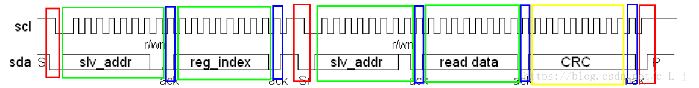
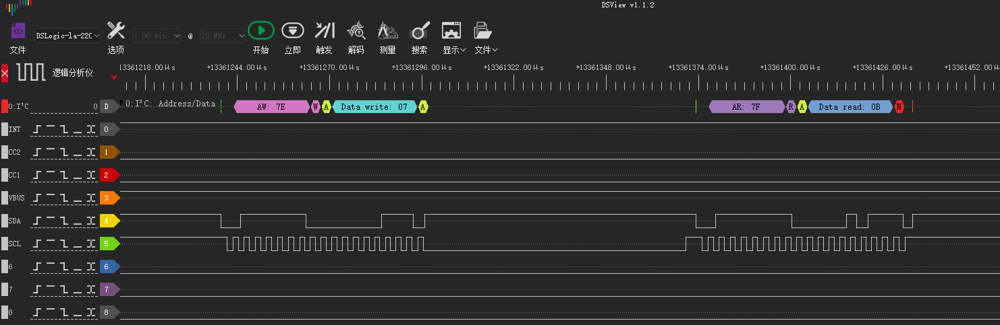
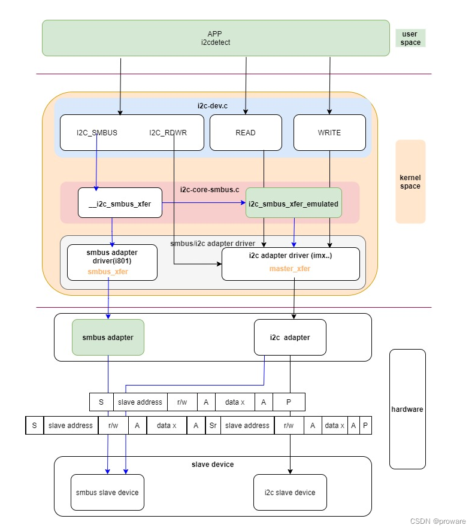

linux i2c偶发读取错误数据问题分析
发现charger i2c老是读取的数据由问题，分析一下
参考
现象
行 102041: 04-03 02:32:00.831 E/PAX_CHG ( 0): sgm41528_info Reg[0x01] = 0x0a
行 102090: 04-03 02:32:05.830 E/PAX_CHG ( 0): sgm41528_info Reg[0x01] = 0x0a
行 102139: 04-03 02:32:10.835 E/PAX_CHG ( 0): sgm41528_info Reg[0x01] = 0x0a
行 102185: 04-03 02:32:15.833 E/PAX_CHG ( 0): sgm41528_info Reg[0x01] = 0x0a
行 102233: 04-03 02:32:20.834 E/PAX_CHG ( 0): sgm41528_info Reg[0x01] = 0x0a
行 102279: 04-03 02:32:25.842 E/PAX_CHG ( 0): sgm41528_info Reg[0x01] = 0xd0 //错误数据
行 102327: 04-03 02:32:30.836 E/PAX_CHG ( 0): sgm41528_info Reg[0x01] = 0x0a
行 102375: 04-03 02:32:35.845 E/PAX_CHG ( 0): sgm41528_info Reg[0x01] = 0x0a
行 102420: 04-03 02:32:40.837 E/PAX_CHG ( 0): sgm41528_info Reg[0x01] = 0x0a
行 102468: 04-03 02:32:45.839 E/PAX_CHG ( 0): sgm41528_info Reg[0x01] = 0x0a
行 102516: 04-03 02:32:50.842 E/PAX_CHG ( 0): sgm41528_info Reg[0x01] = 0x0a
行 102562: 04-03 02:32:55.843 E/PAX_CHG ( 0): sgm41528_info Reg[0x01] = 0x0a
i2c读取接口
drivers/misc/pax/power/sgm41528_charger.c:
static int sgm41528_read_byte(u8 *data, u8 reg)
{
unsigned char buf[2] = {0};
struct i2c_client *client = g_sgm41528_info->client;
s32 ret;
buf[0] = reg;
*data = (u8) ret;
if (1 != i2c_master_send(client, buf, 1)) {//第一次寻址，将reg写入
sgm41528_set_i2c_fault_status();
chr_err("%s, send reg[%x] fail\n", __func__, reg);
return -1;
}
sgm41528_reset_i2c_fault_cnt();
if (1 != i2c_master_recv(client, buf, 1)) {//第二次寻址，接收reg值
sgm41528_set_i2c_fault_status();
chr_err("%s, recv reg[%x] fail\n", __func__, reg);
return -1;
}
sgm41528_reset_i2c_fault_cnt();
//chr_debug(" recv reg[%x]: %02x\n", reg, buf[0]);
*data = buf[0];
return 0;
}
可以看到是通过i2c_master_send 和 i2c_master_recv接口进行读取，该过程进行了2次寻址操作，如下：

通过分解后的时序图，可以看到i2c的读数据由以下13个步骤组成。
第一步，发送一个起始信号。
第二步，发送7bit从机地址，即i2c的地址。此处需要注意，发送数据时，无法发送7bit数据，此处发送了7bit地址+1bit读写选择位，即发送7bit+r/w。最低位为1表示读,为0表示写。
第三步，产生一个ACK应答信号，此应答信号为从机器件产生的应答。
第四步，发送寄存器地址。
第五步，产生一个ACK应答信号，此应答信号为从机器件产生的应答。
第六步，再次发送一个起始信号。
第七步，发送7bit从机地址，即i2c的地址。此处需要注意，发送数据时，无法发送7bit数据，此处发送了7bit地址+1bit读写选择位，即发送7bit+r/w。最低位为1表示读,为0表示写。
第八步，产生一个ACK应答信号，此应答信号为从机器件产生的应答。
第九步，读取一个字节(8bit)的数据。
第十步，产生一个ACK应答信号，此应答信号为CPU产生。
第十一步，读取一个CRC校验码。
第十二步，产生一个NACK信号。此无应答信号由CPU产生。
第十三步，产生一个停止信号。
实际逻辑图如下：

解决方案
采用SMBUS i2c接口替换i2c_master_send和i2c_master_recv接口，稳定性更高，具体原因未知
--- a/UM.9.15/kernel/msm-4.19/drivers/misc/pax/power/sgm41528_charger.c
+++ b/UM.9.15/kernel/msm-4.19/drivers/misc/pax/power/sgm41528_charger.c
@@ -63,11 +63,25 @@ static void sgm41528_reset_i2c_fault_cnt(void)
static int sgm41528_read_byte(u8 *data, u8 reg)
{
- unsigned char buf[2] = {0};
+ //unsigned char buf[2] = {0};
struct i2c_client *client = g_sgm41528_info->client;
+ s32 ret;
+
+ ret = i2c_smbus_read_byte_data(client, reg);
+ if (ret < 0) {
+ sgm41528_set_i2c_fault_status();
+ chr_err("%s, send reg[%x] fail\n", __func__, reg);
+ return ret;
+ }
+
+ sgm41528_reset_i2c_fault_cnt();
+ *data = (u8) ret;
+ /*
buf[0] = reg;
+ *data = (u8) ret;
+
if (1 != i2c_master_send(client, buf, 1)) {
sgm41528_set_i2c_fault_status();
chr_err("%s, send reg[%x] fail\n", __func__, reg);
@@ -86,15 +100,25 @@ static int sgm41528_read_byte(u8 *data, u8 reg)
//chr_debug(" recv reg[%x]: %02x\n", reg, buf[0]);
*data = buf[0];
+ */
return 0;
}
接口不同点分析
首先看一下i2c配置：
bengal_defconfig:
359:CONFIG_I2C_CHARDEV=y
360:CONFIG_I2C_QCOM_GENI=y
UM.9.15/kernel/msm-4.19/drivers/i2c/Makefilei2c相关的代码：
obj-$(CONFIG_I2C) += i2c-core.o
i2c-core-objs := i2c-core-base.o i2c-core-smbus.o
obj-$(CONFIG_I2C_CHARDEV) += i2c-dev.o
obj-y += algos/ busses/ muxes/
# busses/Makefile
obj-$(CONFIG_I2C_QCOM_GENI) += i2c-qcom-geni.o
busses/i2c-qcom-geni.c:
static const struct i2c_algorithm geni_i2c_algo = {
.master_xfer = geni_i2c_xfer,
.functionality = geni_i2c_func,
};
如果控制器支持smbus协议，则对应的驱动设置收发接口smbus_xfer，可以看到这里没有配置，所以我们分别来看一下i2c_smbus_read_byte_data和i2c_master_recv调用流程吧，可能是这里的区别导致：
* i2c_master_recv
└── i2c_transfer_buffer_flags(client, buf, count, I2C_M_RD);
└── i2c_transfer(client->adapter, &msg, 1); //drivers/i2c/i2c-core-base.c
└── __i2c_transfer(adap, msgs, num);
└── adap->algo->master_xfer(adap, msgs, num);
└── geni_i2c_xfer //busses/i2c-qcom-geni.c 调用到adapter算法
drivers/i2c/i2c-core-smbus.c我们不支持smbus_xfer接口，最终调用的是i2c_smbus_xfer_emulated:
* i2c_smbus_read_byte_data
└── i2c_smbus_xfer(client->adapter, client->addr, client->flags,
└── __i2c_smbus_xfer(adapter, addr, flags, read_write,
├── if (adapter->algo->smbus_xfer)
│ ├── res = adapter->algo->smbus_xfer(adapter, addr, flags,
│ └── goto trace;
└── else i2c_smbus_xfer_emulated(adapter, addr, flags, read_write,
再详细看一下i2c_smbus_xfer_emulated函数，看注释是利用i2c接口__i2c_transfer来模拟smbus：
/*
* Simulate a SMBus command using the I2C protocol.
* No checking of parameters is done!
*/
static s32 i2c_smbus_xfer_emulated(struct i2c_adapter *adapter, u16 addr,
unsigned short flags,
char read_write, u8 command, int size,
union i2c_smbus_data *data)
{
/*
* So we need to generate a series of msgs. In the case of writing, we
* need to use only one message; when reading, we need two. We
* initialize most things with sane defaults, to keep the code below
* somewhat simpler.
*/
unsigned char msgbuf0[I2C_SMBUS_BLOCK_MAX+3];
unsigned char msgbuf1[I2C_SMBUS_BLOCK_MAX+2];
int num = read_write == I2C_SMBUS_READ ? 2 : 1;
int i;
u8 partial_pec = 0;
int status;
struct i2c_msg msg[2] = {
{
.addr = addr,
.flags = flags,
.len = 1,
.buf = msgbuf0,
}, {
.addr = addr,
.flags = flags | I2C_M_RD,
.len = 0,
.buf = msgbuf1,
},
};
msgbuf0[0] = command;
switch (size) {
case I2C_SMBUS_QUICK:
msg[0].len = 0;
/* Special case: The read/write field is used as data */
msg[0].flags = flags | (read_write == I2C_SMBUS_READ ?
I2C_M_RD : 0);
num = 1;
break;
case I2C_SMBUS_BYTE:
if (read_write == I2C_SMBUS_READ) {
/* Special case: only a read! */
msg[0].flags = I2C_M_RD | flags;
num = 1;
}
break;
case I2C_SMBUS_BYTE_DATA:
if (read_write == I2C_SMBUS_READ)
msg[1].len = 1;
else {
msg[0].len = 2;
}
break;
case I2C_SMBUS_WORD_DATA:
if (read_write == I2C_SMBUS_READ)
msg[1].len = 2;
else {
msg[0].len = 3;
msgbuf0[1] = data->word & 0xff;
msgbuf0[2] = data->word >> 8;
}
break;
case I2C_SMBUS_PROC_CALL:
num = 2; /* Special case */
read_write = I2C_SMBUS_READ;
msg[0].len = 3;
msg[1].len = 2;
msgbuf0[1] = data->word & 0xff;
msgbuf0[2] = data->word >> 8;
break;
case I2C_SMBUS_BLOCK_DATA:
if (read_write == I2C_SMBUS_READ) {
msg[1].flags |= I2C_M_RECV_LEN;
msg[1].len = 1; /* block length will be added by
the underlying bus driver */
i2c_smbus_try_get_dmabuf(&msg[1], 0);
} else {
msg[0].len = data->block[0] + 2;
if (msg[0].len > I2C_SMBUS_BLOCK_MAX + 2) {
dev_err(&adapter->dev,
"Invalid block write size %d\n",
data->block[0]);
return -EINVAL;
}
i2c_smbus_try_get_dmabuf(&msg[0], command);
for (i = 1; i < msg[0].len; i++)
msg[0].buf[i] = data->block[i - 1];
}
break;
case I2C_SMBUS_BLOCK_PROC_CALL:
num = 2; /* Another special case */
read_write = I2C_SMBUS_READ;
if (data->block[0] > I2C_SMBUS_BLOCK_MAX) {
dev_err(&adapter->dev,
"Invalid block write size %d\n",
data->block[0]);
return -EINVAL;
}
msg[0].len = data->block[0] + 2;
i2c_smbus_try_get_dmabuf(&msg[0], command);
for (i = 1; i < msg[0].len; i++)
msg[0].buf[i] = data->block[i - 1];
msg[1].flags |= I2C_M_RECV_LEN;
msg[1].len = 1; /* block length will be added by
the underlying bus driver */
i2c_smbus_try_get_dmabuf(&msg[1], 0);
break;
case I2C_SMBUS_I2C_BLOCK_DATA:
if (data->block[0] > I2C_SMBUS_BLOCK_MAX) {
dev_err(&adapter->dev, "Invalid block %s size %d\n",
read_write == I2C_SMBUS_READ ? "read" : "write",
data->block[0]);
return -EINVAL;
}
if (read_write == I2C_SMBUS_READ) {
msg[1].len = data->block[0];
i2c_smbus_try_get_dmabuf(&msg[1], 0);
} else {
msg[0].len = data->block[0] + 1;
i2c_smbus_try_get_dmabuf(&msg[0], command);
for (i = 1; i <= data->block[0]; i++)
msg[0].buf[i] = data->block[i];
}
break;
default:
dev_err(&adapter->dev, "Unsupported transaction %d\n", size);
return -EOPNOTSUPP;
}
i = ((flags & I2C_CLIENT_PEC) && size != I2C_SMBUS_QUICK
&& size != I2C_SMBUS_I2C_BLOCK_DATA);
if (i) {
/* Compute PEC if first message is a write */
if (!(msg[0].flags & I2C_M_RD)) {
if (num == 1) /* Write only */
i2c_smbus_add_pec(&msg[0]);
else /* Write followed by read */
partial_pec = i2c_smbus_msg_pec(0, &msg[0]);
}
/* Ask for PEC if last message is a read */
if (msg[num-1].flags & I2C_M_RD)
msg[num-1].len++;
}
status = __i2c_transfer(adapter, msg, num);
if (status < 0)
goto cleanup;
if (status != num) {
status = -EIO;
goto cleanup;
}
status = 0;
/* Check PEC if last message is a read */
if (i && (msg[num-1].flags & I2C_M_RD)) {
status = i2c_smbus_check_pec(partial_pec, &msg[num-1]);
if (status < 0)
goto cleanup;
}
if (read_write == I2C_SMBUS_READ)
switch (size) {
case I2C_SMBUS_BYTE:
data->byte = msgbuf0[0];
break;
case I2C_SMBUS_BYTE_DATA:
data->byte = msgbuf1[0];
break;
case I2C_SMBUS_WORD_DATA:
case I2C_SMBUS_PROC_CALL:
data->word = msgbuf1[0] | (msgbuf1[1] << 8);
break;
case I2C_SMBUS_I2C_BLOCK_DATA:
for (i = 0; i < data->block[0]; i++)
data->block[i + 1] = msg[1].buf[i];
break;
case I2C_SMBUS_BLOCK_DATA:
case I2C_SMBUS_BLOCK_PROC_CALL:
if (msg[1].buf[0] > I2C_SMBUS_BLOCK_MAX) {
dev_err(&adapter->dev,
"Invalid block size returned: %d\n",
msg[1].buf[0]);
status = -EPROTO;
goto cleanup;
}
for (i = 0; i < msg[1].buf[0] + 1; i++)
data->block[i] = msg[1].buf[i];
break;
}
cleanup:
if (msg[0].flags & I2C_M_DMA_SAFE)
kfree(msg[0].buf);
if (msg[1].flags & I2C_M_DMA_SAFE)
kfree(msg[1].buf);
return status;
}
具体如何模拟的不深入分析了，反正这个接口就是比直接调用i2c_master_recv稳定。。
i2c/smbus数据传输调用流程图
